エディターの自動保存の設定
Visual Studio Code のエディターでファイルを編集している場合、デフォルトの設定では自動保存はオフになっており保存するには手動で行う必要があります。ここでは Visual Studio Code でエディターの自動保存に関する設定を行う方法について解説します。
自動保存の設定を行う
Visual Studio Code の自動保存に関する設定をするには「ファイル」メニューの中にある「ユーザー設定」をクリックし、さらに表示されたサブメニューの中から「設定」をクリックしてください。
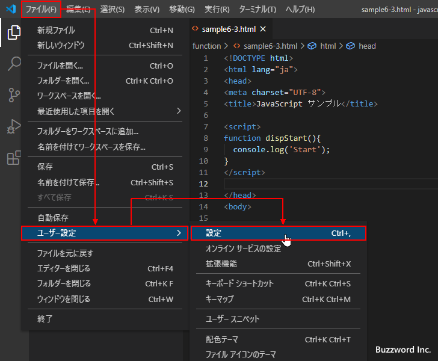
Visual Studio Code の設定画面が表示されます。
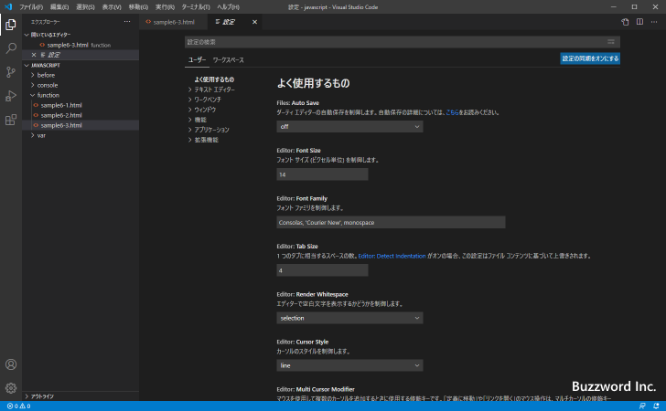
画面上部の検索ボックスに「Auto Save」と入力してください。いくつか設定項目が表示されますが、「Files:Auto Save」と「Files:Auto Save Delay」の 2 つの設定項目が関係する設定項目です。
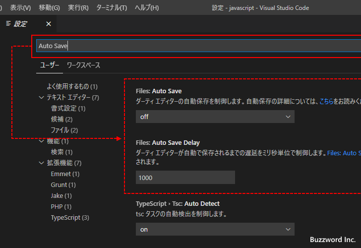
「Files:Auto Save」の設定では 4 つの選択肢から 1 つ選択します。
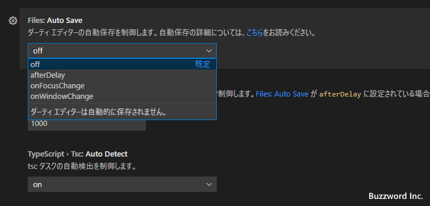
それぞれの設定項目の内容は次のとおりです。
off : 自動保存しない afterDelay : 別途指定したミリ秒経過後に自動保存 onFocusChange : エディタがフォーカスを失ったときに自動保存 onWindowChange : ウィンドウがフォーカスを失ったときに自動保存
デフォルトでは off となっており自動保存はされません。それ以外の設定項目について見ていきます。
afterDelay
afterDelay を選択した場合は編集が行われたあと 「Files:Auto Save Delay」 で設定されたミリ秒数経過後に自動保存が行われます。デフォルトでは Files:Auto Save Delay の値は 1000 ( = 1 秒)となっています。
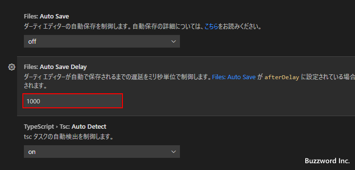
1000 ミリ秒だと入力したと同時に保存されていきますので、そこまで頻繁に保存が必要なければ Files:Auto Save Delay の値も併せて変更してください。例えば Files:Auto Save を afterDelay に設定し、 Files:Auto Save Delay を 10000 に設定してみます。この場合、編集が行われたあと 10 秒毎に自動保存されます。
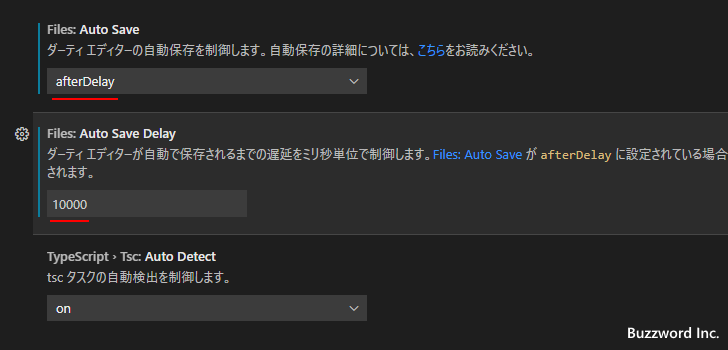
設定変更を行うとすぐに反映されます。
それではエディター画面で何か修正を行ってください。自動保存が行われる 10 秒後まではまだ保存がされていない状態を表すマークが表示されています。
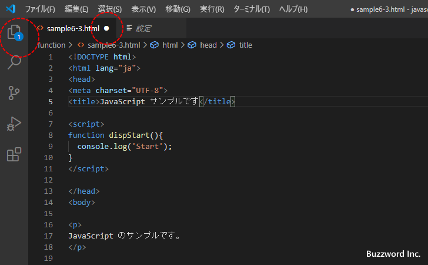
10 秒経過すると自動的に保存が行われて、まだ保存されていない状態を表すマークも消えます。
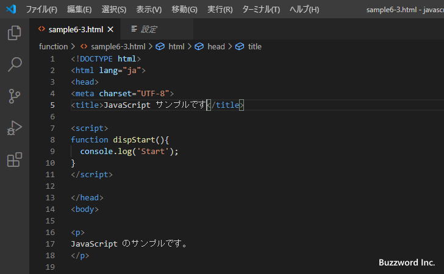
onFocusChange
onFocusChange を選択した場合、編集を行ったエディターにフォーカスがある間は自動保存は行われませんが、別のエディターやツールバーなどにフォーカスが移ると自動的に保存が行われます。
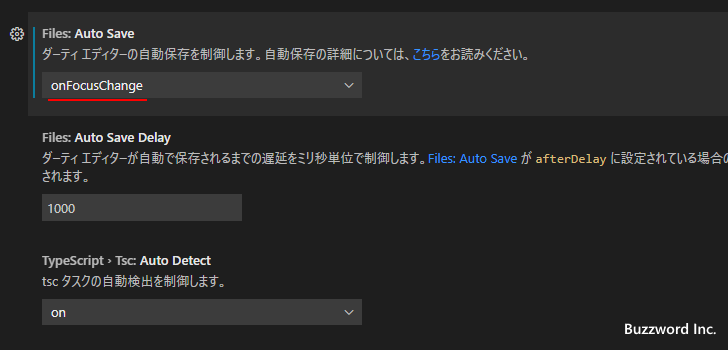
それではエディター画面で何か修正を行ってください。エディターにフォーカスがある間はまだ保存がされていない状態を表すマークが表示されています。
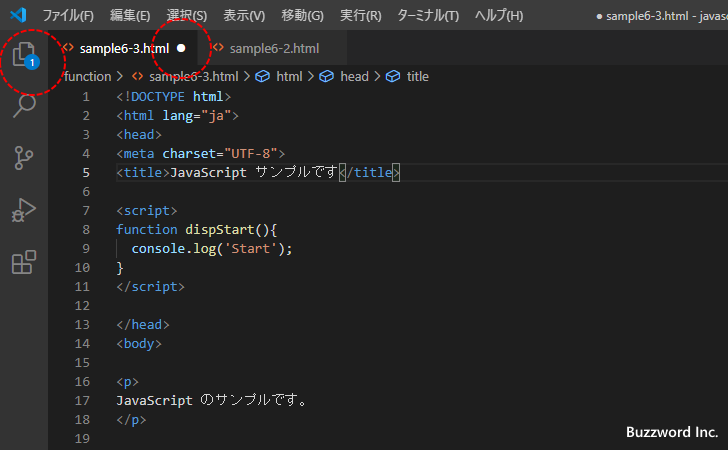
違うエディターをクリックするなどしてフォーカスが移動すると自動的に保存が行われて、まだ保存されていない状態を表すマークも消えます。
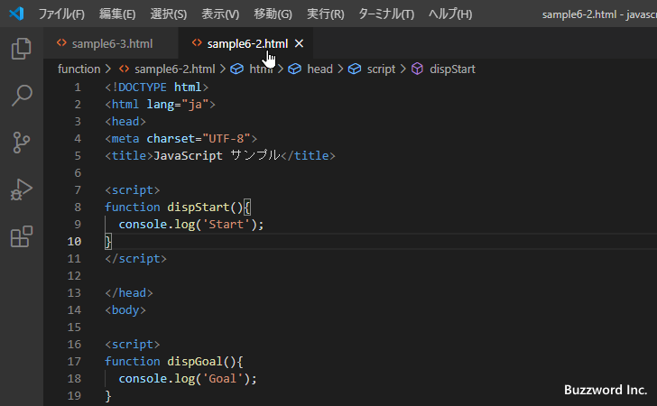
onWindowChange
onWindowChange を選択した場合、編集を行ったエディターを含むウィンドウにフォーカスがある間は自動保存は行われませんが、別のウィドウにフォーカスが移ると自動的に保存が行われます。
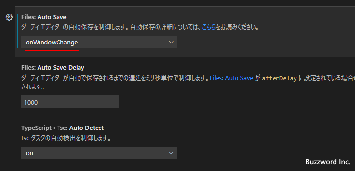
それではエディター画面で何か修正を行ってください。エディターを含むウィンドウにフォーカスがある間はまだ保存がされていない状態を表すマークが表示されています。同じウィンドウ内であれば別のエディターへフォーカスが移っても自動保存は行われません。
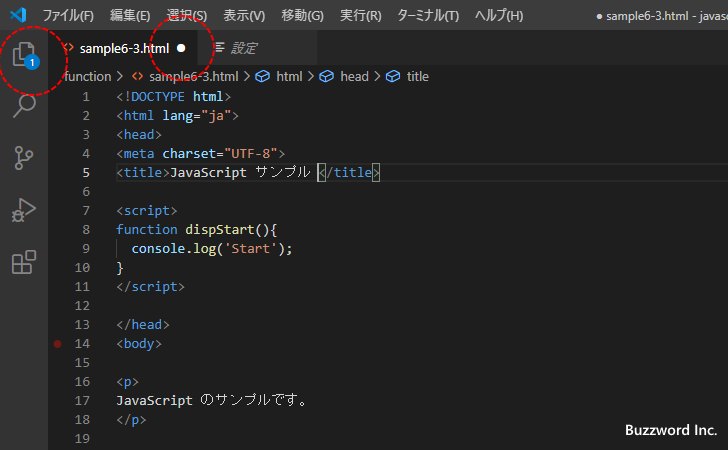
Visual Studio Code の別のウィンドウをアクティブにしたり、違うアプリケーションをアクティブにするなどして編集を行っていたエディターが含まれるウィンドウからフォーカスが移動すると自動的に保存が行われて、まだ保存されていない状態を表すマークも消えます。
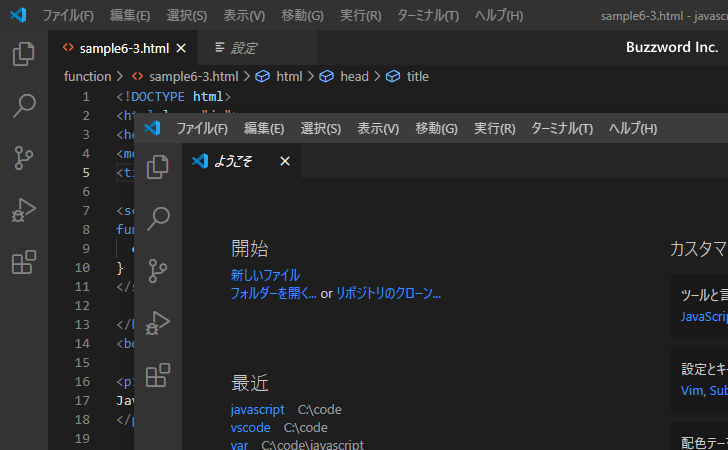
自動保存の有効と無効の切り替えを簡単に行う
「ファイル」メニューをクリックすると、「自動保存」というトグルボタンがあります。
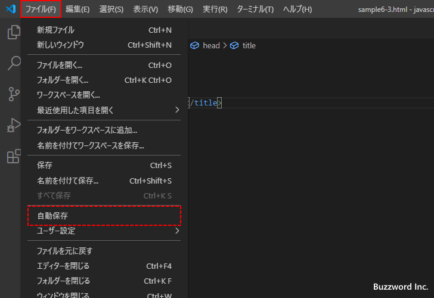
このトグルボタンをクリックするたびにチェックマークが付いたり消えたりします。チェックマークが付いているときは自動保存が有効であり、付いていないときは自動保存が無効です。
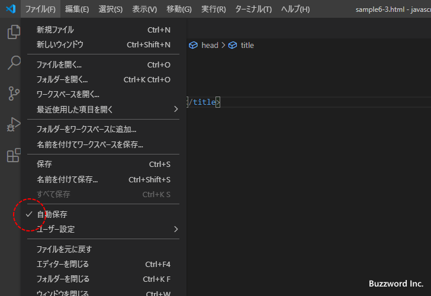
有効になっている自動保存の設定は afterDelay です。その他の設定が行われていた場合でも、トグルボタンで有効と無効を切り替えると afterDelay に設定されます。 afterDelay の設定でよければ自動保存の有効と無効をこのトグルボタンをクリックすることで簡単に切り替えられます。
-- --
Visual Studio Code でエディターの自動保存に関する設定を行う方法について解説しました。
( Written by Tatsuo Ikura )

著者 / TATSUO IKURA
初心者～中級者の方を対象としたプログラミング方法や開発環境の構築の解説を行うサイトの運営を行っています。